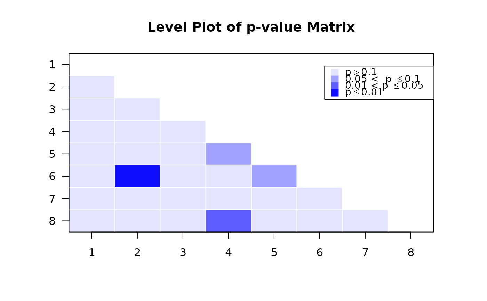
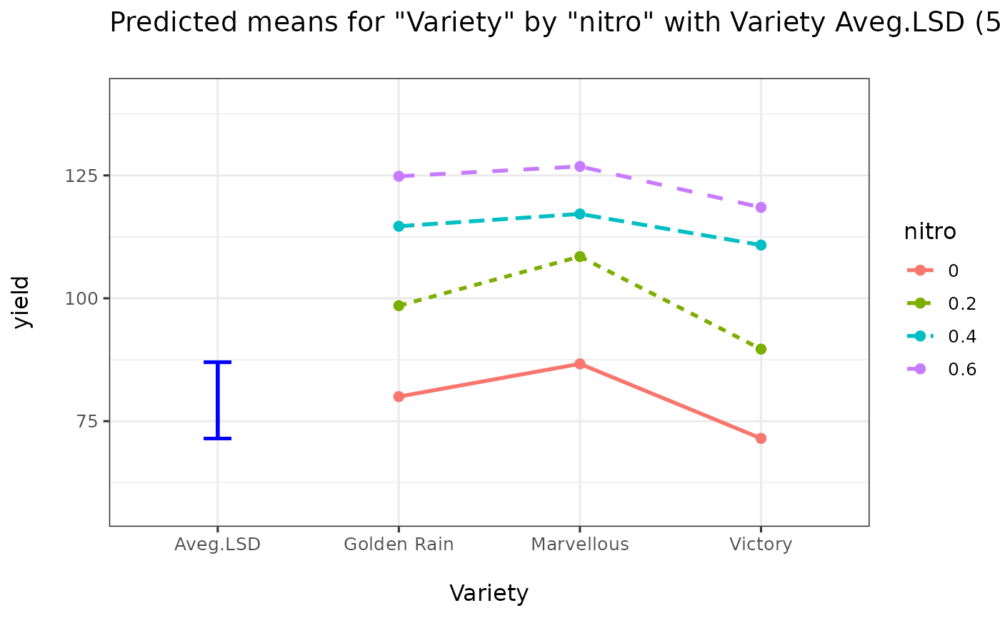
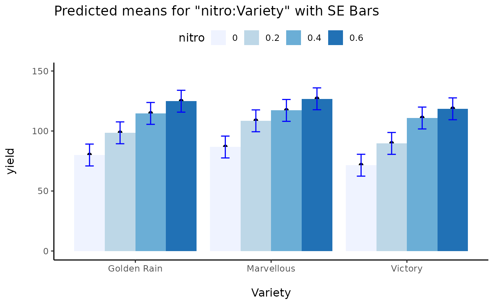
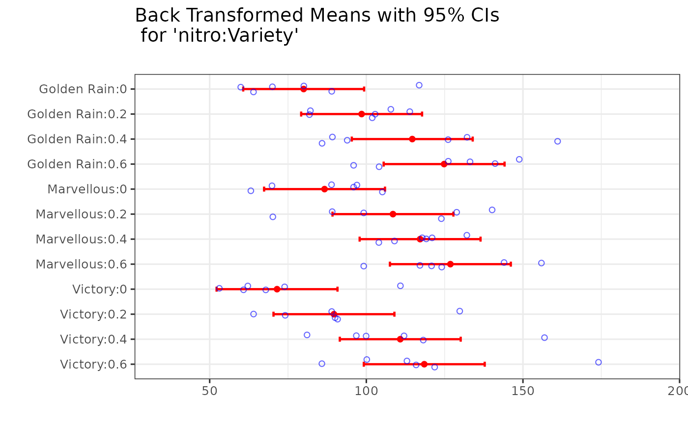
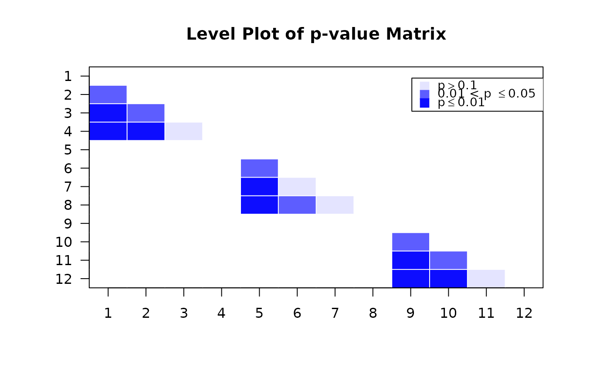

Creates a plot of p-values of pairwise comparisons.
Arguments
- pmatrix
A matrix with p-values from pairwise comparisons. (This is a lower triangle matrix.)
- level
The level of p-value to be highlighted. Default is 0.05.
- mtitle
The main title in the graph.
- xylabel
The x and y labels in the graph.
- margin
A value for specifying x and y margins in the graph. The default value is 5.
- legendx
A value for specifying x coordinate of legend. The default value is 0.73.
- newwd
A logical variable to indicate whether to print graph in a new window. The default is FALSE.
Examples
library(predictmeans)
set.seed(2013)
pvalues <- runif(28)
pmatrix <- matrix(0,8,8)
pmatrix[lower.tri(pmatrix)] <- pvalues
round(pmatrix, 4)
#> [,1] [,2] [,3] [,4] [,5] [,6] [,7] [,8]
#> [1,] 0.0000 0.0000 0.0000 0.0000 0.0000 0.0000 0.0000 0
#> [2,] 0.4633 0.0000 0.0000 0.0000 0.0000 0.0000 0.0000 0
#> [3,] 0.9523 0.7986 0.0000 0.0000 0.0000 0.0000 0.0000 0
#> [4,] 0.7849 0.9342 0.8579 0.0000 0.0000 0.0000 0.0000 0
#> [5,] 0.7635 0.8197 0.6238 0.0773 0.0000 0.0000 0.0000 0
#> [6,] 0.2522 0.0046 0.7151 0.3296 0.0745 0.0000 0.0000 0
#> [7,] 0.7263 0.2472 0.9783 0.5498 0.8099 0.4634 0.0000 0
#> [8,] 0.9132 0.7540 0.9412 0.0451 0.2713 0.1563 0.6729 0
PMplot(pmatrix)

Oats$nitro <- factor(Oats$nitro)
fm <- lmer(yield ~ nitro*Variety+(1|Block/Variety), data=Oats)
predictout <- predictmeans(fm, "nitro:Variety", atvar="Variety", adj="BH", barplot=TRUE)
#> Warning: barplot is deprecated: use which.plots = c("mean", "bar", "pval", "back") instead.




PMplot(predictout$p_valueMatrix)
